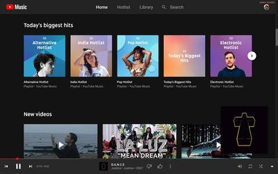
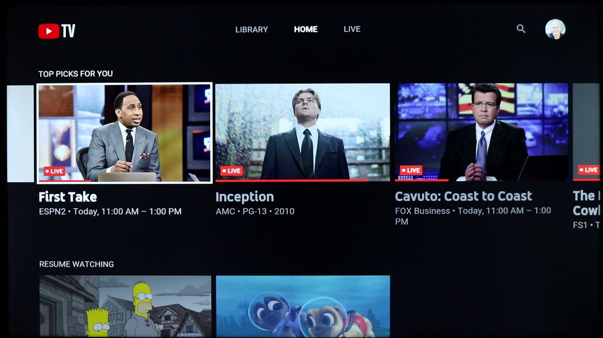
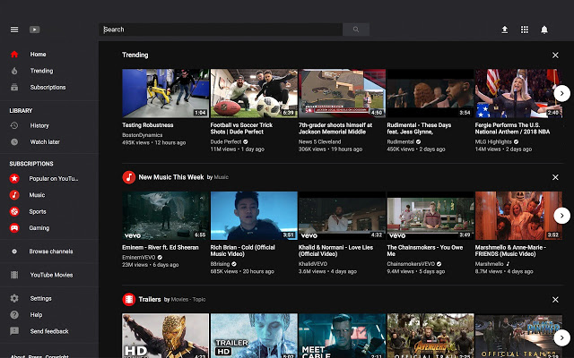
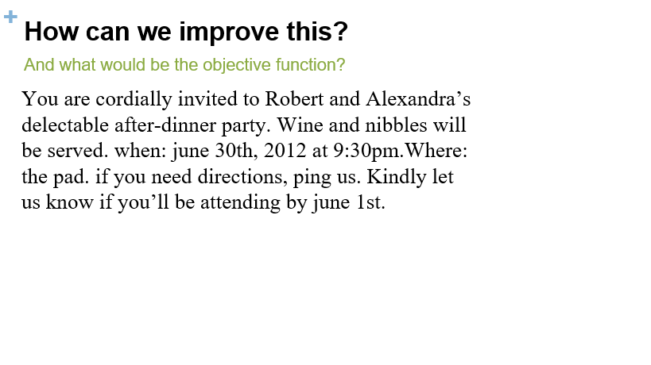
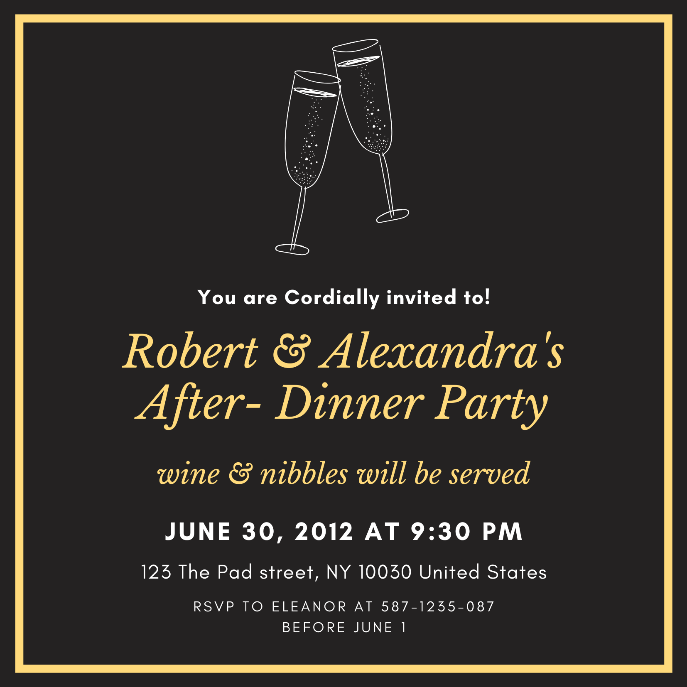

A1:My Favorite Application
One of my Favorite application is YouTube I’m using it every day, because that apps was very useful to my study it can help me to learn something that didn’t discuss in school and also it will help me to gain some knowledge by watching some educational video and I didn’t used it for my study I also used it for my entertainment I watched some video tutorial if I want to learn something when I’m bored or just what to know something on “how to do it”. For me this app is good because every time that I want to search something here or about to my study it has a lot of suggestion to watched.
When it comes on how I used YouTube apps I used the features of it I subscribe my favorite channel and if there is a video that I want to watched again I’ve download it to save my data. To become updated to the channel that I’ve subscribe I click the notification bell to notify me if there’s a new video uploaded. I spend one to three hours by using this because sometimes I just used it for my sound trip and the new features of that app is I can listening to the song even my device is turn off and it can easily look up the video you’ve watched and like on the account tab.
A2: Persona


A3: Prototype
Low fidelity prototype


A4: Invitation Design
1 .How can we improve this?
My comments in this invitation is, as observe the invitation it looks like not an invitation, it just like a letter that wrote in a paper, because it was very plain and I notice that the information of the invitation was confusing because there is no specific location or address and if the attendees will read it they might be get confused regarding to date because the sentence was not constructed well.
My comments for improvements of this invitation is to used correct format on how to make the content of the invitation we can start addressing the recipient of the letter politely, used informal or formal language depends on the occasion, the most important here is by giving the specific information regarding to the time, venue and date of event, be brief and straight to the point and you can also request confirmation of attendance. For the design of the invitation it should be presentable and the design was appropriate to the events.
2. What would be the objective?
The objective of this invitation or letter is to invite the attendees for the event of Robert and Alexandra’s, as indicated in the invitation they want to know on how many attendees will come to their after-dinner party before the day of the party
3.Create your own Design/ version of passage
This the invitation I create, I organize the details, add some details and high light the title of the events to get the attention of the readers and I designed the invitation in a simple way, but presentable and readable
A5: Grid Design Problem
Dark-Colored-Tone boxes = images
Light-Colored-Tone boxes = contents/texts
color = white space